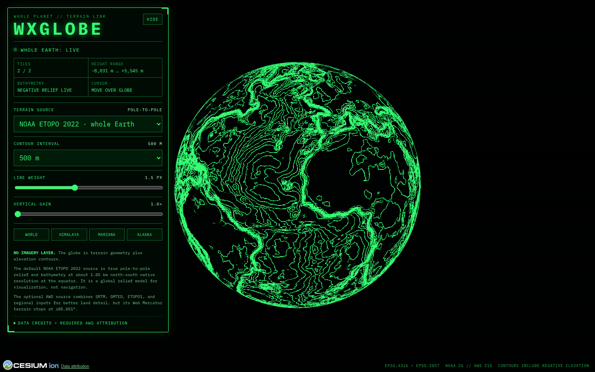
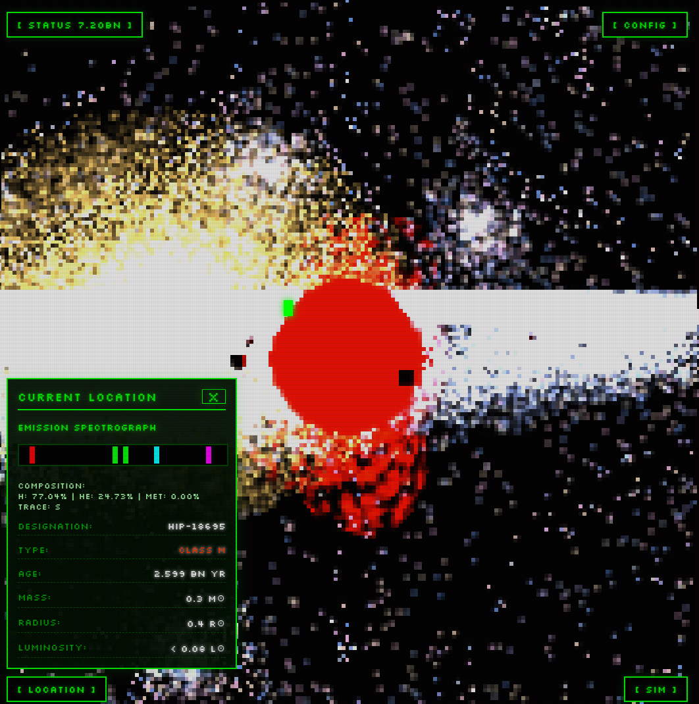
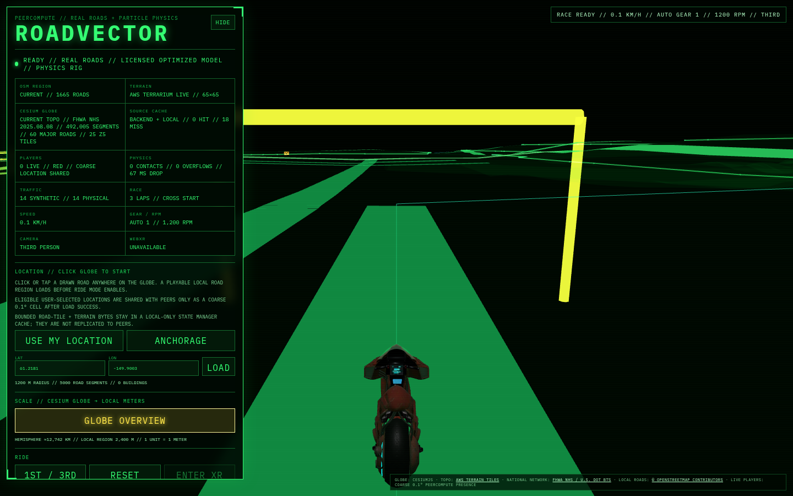
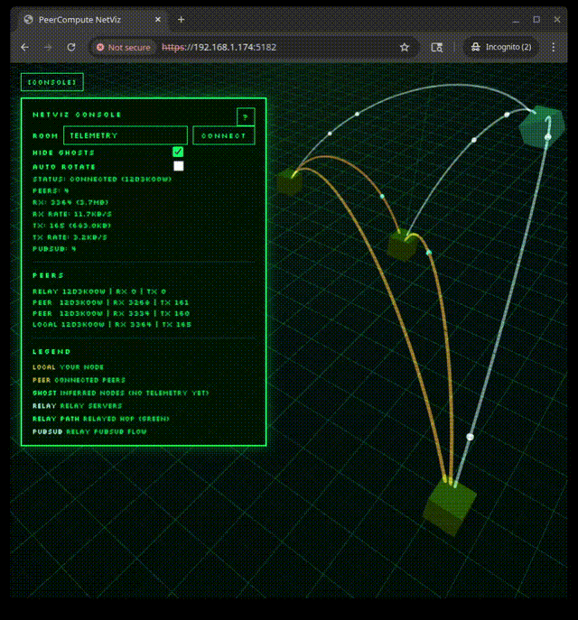
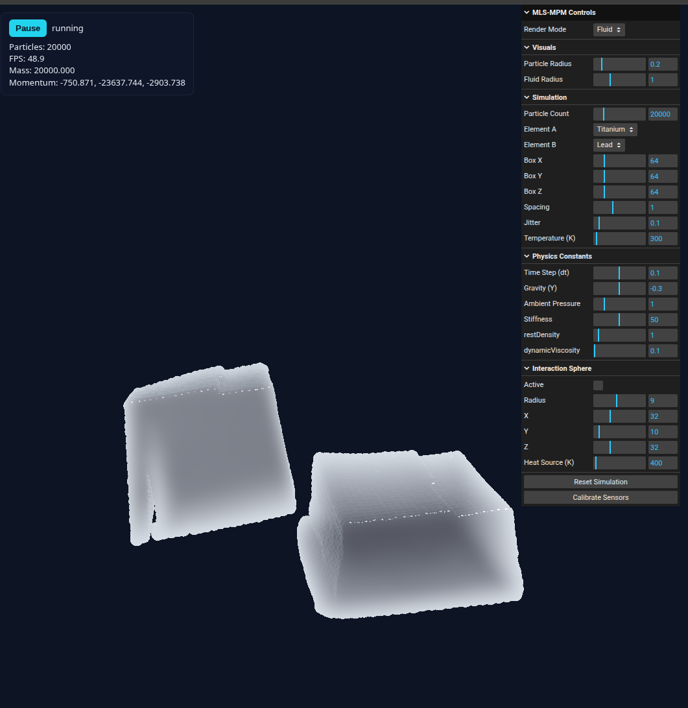
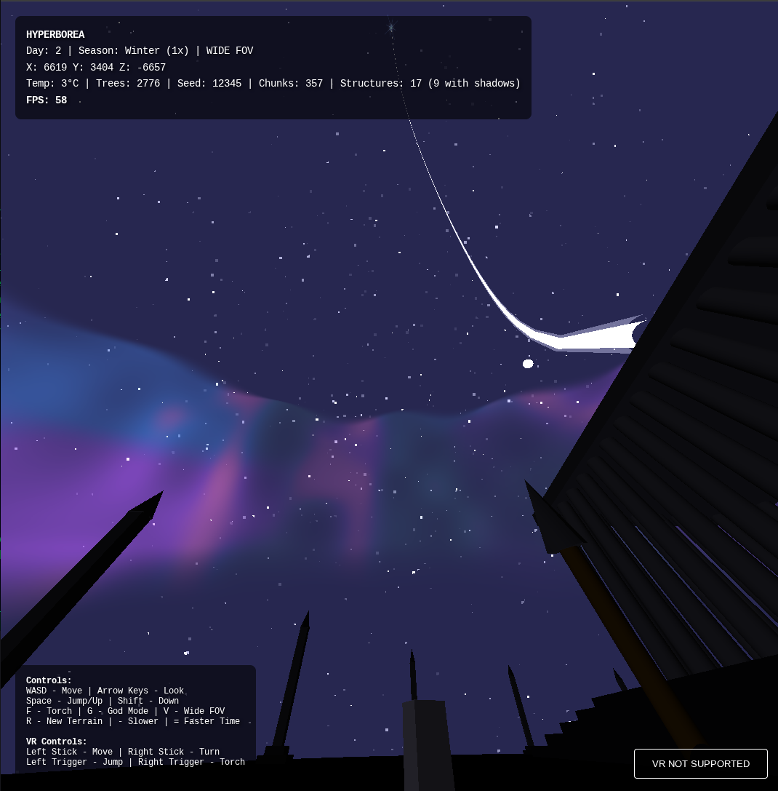

Distributed computing
Demo atlas.
Explore what browsers can build together. Run AI models, enter shared worlds, and simulate physical systems on PeerCompute.

Demo directory
Local Model Console
Chat with browser-hosted models. Route text, images, and voice between local and remote peers.

CubeChat
Step into a shared 3D room with proximity video chat and AI residents.

Universes
Generate galaxies and star systems across scales with shared compute workers.

Multiscale Ladder
Travel from supergalactic structures to orbital clouds in a WebGPU simulation.

PlanetGen
Shape a procedural planet with GPU-driven oceans, atmosphere, and weather.
WXGlobe
Explore Earth’s elevation and ocean depths through global topographic contours.

EarthGrid
Explore NOAA terrain, weather, roads, and buildings in a shared world.

RoadVector
Ride a particle-based motorcycle along real roads with simulated traffic.

NetViz
Inspect live peer connections and watch the network topology change.

Fano Reactor
Explore sedenion bonds, target a Fano map, and probe cascades.

Schrodinger
Explore atoms, orbitals, and the properties of water and other materials.

SneakyWoods
Join a multiplayer woodland arena with synchronized player state.

Daddy Go!
Control a runner with your body and compete for the shared high score.

Dynamics (WebGpuPhys)
Play with a particle-based dynamics engine in a WebGPU physics sandbox.

MPM Visual (WebGpuPhys)
Experiment with particle materials, thermal effects, and MLS-MPM dynamics.

PPF Contact Solver (WebGpuPhys)
Investigate collisions and friction with a GPU-accelerated contact solver.

Hyperborea
Enter a WebXR-ready multiplayer scene backed by a shared GPU hub.
No demos match your search.